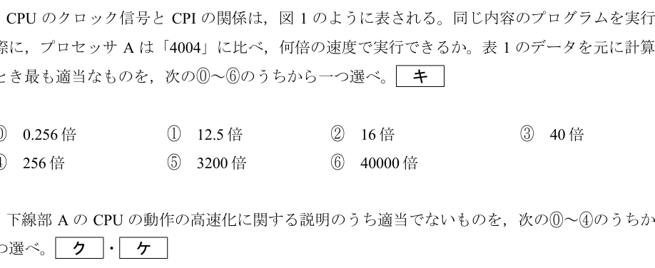

問5：CPUの総合性能比較
正解: ③
[問題PDFを開く] [解答PDFを開く] (問5は問題PDFの4ページ、解答PDFの2ページ目です)
ポイント解説
CPUの実際の性能は、クロック周波数だけでなく、1つの命令を処理するのに何クロック必要かを示す「CPI (Clocks Per Instruction)」も考慮する必要があります。 平均命令実行時間 = CPI ÷ クロック周波数 で計算され、この値が小さいほど高性能と言えます。
性能比較の計算
プロセッサAが「4004」に比べて何倍の速度で実行できるか、それぞれの平均命令実行時間を求めて比較します。
- 「4004」の平均命令実行時間 (X):
X = 10 (CPI) ÷ 750kHz = 10 / (750 × 103) 秒 - プロセッサAの平均命令実行時間 (Y):
Y = 0.8 (CPI) ÷ 2.4GHz = 0.8 / (2.4 × 109) 秒
何倍速いかを求めるには、X ÷ Y を計算します。
X / Y = (10 / 750k) / (0.8 / 2.4G)
= (10 × 2.4 × 109) / (750 × 103 × 0.8)
= (24 × 109) / (600 × 103)
= (24 / 600) × 106
= 0.04 × 106 = 40,000
したがって、プロセッサAは「4004」の40,000倍の速度で実行できることになります。